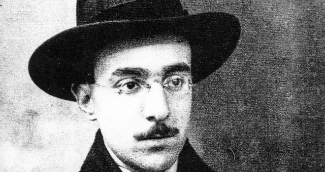

Fernando Pessoa (1888-1935) foi um poeta, dramaturgo, ensaísta, tradutor, publicitário, astrólogo, inventor, empresário, correspondente comercial, crítico literário e comentador político. Nascido em Lisboa, Pessoa se destacou na poesia com a criação de seus heterônimos, como Ricardo Reis, Álvaro de Campos e Alberto Caeiro.
Ele também traduziu obras de autores como Shakespeare e Edgar Allan Poe para o português e obras portuguesas para o inglês e francês. Pessoa é considerado um dos principais autores da língua portuguesa e um dos maiores poetas lusófonos do século XX.